Mini-Project 02 - Making Backyards Affordable for All
Author
socoyjonathan
Published On: 2025-11-25
Introduction
Housing affordability is one of the greatest challenges facing New York City today. As an first-generation immigrant in American, my dream of owning a home and even renting an affordable apartment becomes increasingly more challenging. In this mini-project, I intend to demonstrate my skills at Data Integration/Data Visualization/Metric Creation in an analysis of Official Statistics/Economic Data/Census Data data. From this data exploration and analysis, I will use data to lobby politicians in support of a federal YIMBY-incentive program and push for opportunities for new Americans to obtain affordable housing. Using data analysis, I will locate districts that would benefit from adopting YIMBY-type policies and whose reelection prospects would be improved by sponsoring this type of bill.
Data Acquisition
Task 1: Data Import
As a short remark, this project is eerily similar to my Final Project and I am excited to embark in this preliminary data analysis. Using the American Community Survey (ACS) and the tidycensus package, I use provided code to download relevant data for the range 2019-2023:
Household income
Monthly rent
Total population
Total number of households
R Code
if(!dir.exists(file.path("data", "mp02"))){dir.create(file.path("data", "mp02"), showWarnings=FALSE, recursive=TRUE)}if (!require("tidyverse")) install.packages("tidyverse")if (!require("styler")) install.packages("styler")if (!require("glue")) install.packages("glue")if (!require("gt")) install.packages("gt")if (!require("ggrepel")) install.packages("ggrepel")if (!require("gghighlight")) install.packages("gghighlight")if (!require("DT")) install.packages("DT")if (!require("scales")) install.packages("scales")if (!require("knitr")) install.packages("knitr")library <-function(pkg){## Mask base::library() to automatically install packages if needed## Masking is important here so downlit picks up packages and links## to documentation pkg <-as.character(substitute(pkg))options(repos =c(CRAN ="https://cloud.r-project.org"))if(!require(pkg, character.only=TRUE, quietly=TRUE)) install.packages(pkg)stopifnot(require(pkg, character.only=TRUE, quietly=TRUE))}library(tidyverse)library(glue)library(readxl)library(tidycensus)library(gghighlight)library(ggrepel)library(httr2)library(rvest)library(gt)library(DT)library(scales)library(knitr)library(htmltools)library(stringr)tags$style(HTML(" h3 { text-align: center; margin-bottom: 1em; } h4 { margin-top: 1.5em; color: #007bff; } .tabset > h4 { border-bottom: 2px solid #007bff; padding-bottom: 0.3em; } table.dataTable.compact thead th { background-color: #007bff; color: white; }"))
We will be working at the level of Core-Based Statistical Areas or CBSAs, metropolitan (or micropolitan) area surrounding a central town and we will require income estimates from the Bureau of Labor Statistics (BLS) records data.
Along with the BLS Quarterly Census of Employment and Wages (QCEW) data:
R Code
library(httr2)library(rvest)get_bls_qcew_annual_averages <-function(start_year=2009, end_year=2023){ fname <-glue("bls_qcew_{start_year}_{end_year}.csv.gz") fname <-file.path("data", "mp02", fname) YEARS <-seq(start_year, end_year) YEARS <- YEARS[YEARS !=2020] # Drop Covid year to match ACSif(!file.exists(fname)){ ALL_DATA <-map(YEARS, .progress=TRUE, possibly(function(yy){ fname_inner <-file.path("data", "mp02", glue("{yy}_qcew_annual_singlefile.zip"))if(!file.exists(fname_inner)){request("https://www.bls.gov") |>req_url_path("cew", "data", "files", yy, "csv",glue("{yy}_annual_singlefile.zip")) |>req_headers(`User-Agent`="Mozilla/5.0 (Macintosh; Intel Mac OS X 10.15; rv:143.0) Gecko/20100101 Firefox/143.0") |>req_retry(max_tries=5) |>req_perform(fname_inner) }if(file.info(fname_inner)$size <755e5){warning(sQuote(fname_inner), "appears corrupted. Please delete and retry this step.") }read_csv(fname_inner, show_col_types=FALSE) |>mutate(YEAR = yy) |>select(area_fips, industry_code, annual_avg_emplvl, total_annual_wages, YEAR) |>filter(nchar(industry_code) <=5, str_starts(area_fips, "C")) |>filter(str_detect(industry_code, "-", negate=TRUE)) |>mutate(FIPS = area_fips, INDUSTRY =as.integer(industry_code), EMPLOYMENT =as.integer(annual_avg_emplvl), TOTAL_WAGES = total_annual_wages) |>select(-area_fips, -industry_code, -annual_avg_emplvl, -total_annual_wages) |># 10 is a special value: "all industries" , so omitfilter(INDUSTRY !=10) |>mutate(AVG_WAGE = TOTAL_WAGES / EMPLOYMENT) })) |>bind_rows()write_csv(ALL_DATA, fname) } ALL_DATA <-read_csv(fname, show_col_types=FALSE) ALL_DATA_YEARS <-unique(ALL_DATA$YEAR) YEARS_DIFF <-setdiff(YEARS, ALL_DATA_YEARS)if(length(YEARS_DIFF) >0){stop("Download failed for the following years: ", YEARS_DIFF, ". Please delete intermediate files and try again.") } ALL_DATA}WAGES <-get_bls_qcew_annual_averages()WAGES <- WAGES |>rename(year = YEAR)WAGES |>mutate(AVG_WAGE =dollar(AVG_WAGE, accuracy =1), TOTAL_WAGES =dollar(TOTAL_WAGES, accuracy =1)) |>format_titles() |>head(n =5) |>datatable(options =list(searching =FALSE, info =FALSE))
We will clean our data by correcting city names with characters such as ?, rename cities that have multiple names for consistency, and particularly correct Los Angeles city name and CBSA discrepency.
R Code
# Fix weird naming conventions fix_names <-c("Aguadilla-Isabela-San Sebasti\\?n, PR Metro Area"="Aguadilla-Isabela-San Sebastián, PR Metro Area","San Germ\\?n-Cabo Rojo, PR Metro Area"="San Germán-Cabo, PR Metro Area","Mayag\\?ez, PR Metro Area"="Mayagüez, PR Metro Area")# Function that applies replacements across all character columnsfix_table <-function(df) { df |>mutate(NAME =str_replace_all(NAME, fix_names))}# Reassign to original variable namesPOPULATION <-fix_table(POPULATION)INCOME <-fix_table(INCOME)RENT <-fix_table(RENT)HOUSEHOLDS <-fix_table(HOUSEHOLDS)# Make sure weird cities have proper syntaxpattern <-"[^A-Za-z ,'-]"find_weird_cities <-function(df, name_col ="NAME") { df |>filter(str_detect(.data[[name_col]], pattern)) |>distinct(.data[[name_col]])}tables <-list(POPULATION = POPULATION,INCOME = INCOME,RENT = RENT,HOUSEHOLDS = HOUSEHOLDS)weird_cities_list <-map(tables, find_weird_cities)#cat(paste0(seq_along(weird_cities_list), ". ", weird_cities_list, collapse = "\n"))# Assign most common name to city names with same CBSA canonical_names <- POPULATION |>group_by(CBSA, NAME) |>tally() |>group_by(CBSA) |>filter(n ==max(n)) |># keep all names tied for top frequencyslice_min(NAME, n =1) |># pick alphabetically firstungroup() |>select(CBSA, canonical_name = NAME)standardize_names <-function(df, cbsa_col ="CBSA", name_col ="NAME") { df |>left_join(canonical_names, by = cbsa_col) |>mutate(!!name_col := canonical_name) |># replace old namesselect(-canonical_name)}# Apply to all four tablesPOPULATION <-standardize_names(POPULATION)INCOME <-standardize_names(INCOME)RENT <-standardize_names(RENT)HOUSEHOLDS <-standardize_names(HOUSEHOLDS)# Shorten city names to (CITY, STATE ABR)shorten_name <-function(name) {# Extract everything up to the last two capital letters at the endstr_extract(name, ".*\\b[A-Z]{2}\\b")}# Apply to all four tablesPOPULATION <- POPULATION |>mutate(NAME =shorten_name(NAME))INCOME <- INCOME |>mutate(NAME =shorten_name(NAME))RENT <- RENT |>mutate(NAME =shorten_name(NAME))HOUSEHOLDS <- HOUSEHOLDS |>mutate(NAME =shorten_name(NAME))# Fix discrepency for LA City Namefix_CBSAs <-c("31100"=31080)fix_names <-c("Los Angeles-Long Beach-Santa Ana, CA"="Los Angeles-Long Beach-Anaheim, CA")standardize_la <-function(df) { df |>mutate(# Convert CBSA to character for matching, then back to numeric if neededCBSA =if_else(as.character(CBSA) %in%names(fix_CBSAs), # logical conditionas.numeric(fix_CBSAs[as.character(CBSA)]), # replacement CBSA # else keep original ),# Replace names in all character columnsacross(where(is.character), ~str_replace_all(.x, fix_names)) )}#map(tables, standardize_la)# Apply to all four tablesPOPULATION <-standardize_la(POPULATION)INCOME <-standardize_la(INCOME)RENT <-standardize_la(RENT)HOUSEHOLDS <-standardize_la(HOUSEHOLDS)# check if "New York" in NAMES stringsnyc_substring <-grepl("New York", POPULATION$NAME) nyc <- POPULATION |>filter(NAME == NAME[nyc_substring]) |>distinct(CBSA, NAME)nycla_substring <-grepl("Los Angeles", POPULATION$NAME) # check if "Los Angeles" in NAMES stringslos_angeles <- POPULATION |>filter(NAME == NAME[la_substring]) |>distinct(CBSA, NAME)los_angeles
We must all ensure that our dataset contains CBSAs with more than 9 years worth of data:
R Code
# Filter out CBSAs with < 10 rows filter_cbsa_10 <-function(df) { df |># (missing entries for any four years from 2009-2023)group_by(CBSA) |>filter(n() >=10) |>ungroup()}# Reassign to original variablesPOPULATION <-filter_cbsa_10 (POPULATION)INCOME <-filter_cbsa_10 (INCOME)RENT <-filter_cbsa_10 (RENT)HOUSEHOLDS <-filter_cbsa_10 (HOUSEHOLDS)INCOME |>format_titles() |>head(n =5) |>datatable(options =list(searching =FALSE, info =FALSE))
R Code
RENT |>format_titles() |>head(n =5) |>datatable(options =list(searching =FALSE, info =FALSE))
R Code
POPULATION |>format_titles() |>head(n =5) |>datatable(options =list(searching =FALSE, info =FALSE))
R Code
HOUSEHOLDS |>format_titles() |>head(n =5) |>datatable(options =list(searching =FALSE, info =FALSE))
Data Integration and Initial Exploration
Relationship Diagram
After examining the structure of the data sets, let’s create a suitable data relationship diagram using dbdiagram.io
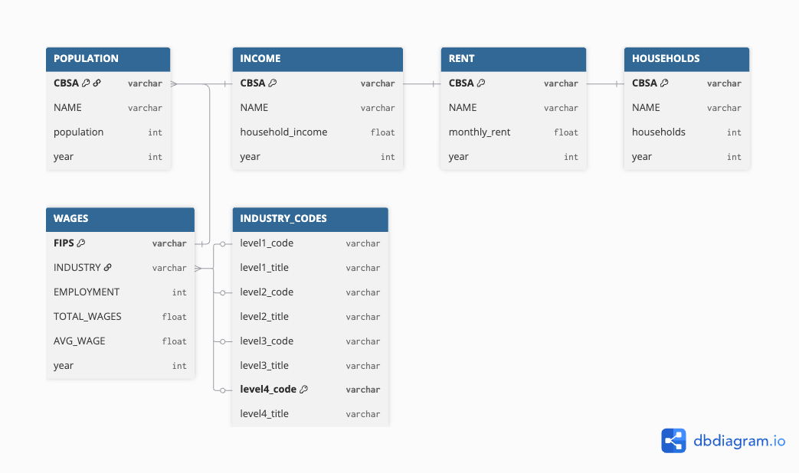
Now that we have all of our data downloaded and cleaned up, let’s visualize some aspects of our data to begin exploring our datasets.
R Code
ggplot(INCOME, aes(x=year, y=household_income, color=NAME)) +geom_point(alpha =0.5) +geom_line(alpha =0.5) +gghighlight(CBSA %in%c(nyc$CBSA, los_angeles$CBSA),use_direct_label =FALSE,unhighlighted_params =list(alpha =0.1, color ="grey")) +geom_text_repel(data =subset(INCOME, NAME %in%c(nyc$NAME, los_angeles$NAME) & year ==max(year)),aes(label = dplyr::case_when( NAME == nyc$NAME ~"New York", NAME == los_angeles$NAME ~"Los Angeles",TRUE~ NAME ), color = NAME),nudge_x =0.1, nudge_y =0.1,direction ="y",hjust =0,segment.color =NA,size =3.5,show.legend =FALSE ) +xlab("Year") +ylab("Income ($)") +scale_y_continuous(labels = scales::dollar) +theme_bw() +theme(legend.position="none") +labs(title ="Household Income Throughout The Years", subtitle ="Each line represents one metropolitan area") +theme(plot.subtitle =element_text(size =10, hjust =0.5),plot.title =element_text(size =14, face ="bold", hjust =0.5),axis.title =element_text(size =12),strip.text =element_text(size =10, face ="bold") ) +guides(size =guide_legend(title.position ="top")) +theme(legend.position ="none") +annotate("text", x =-Inf, y =Inf, label ="Each line = one CBSA", hjust =1.1, vjust =1.5, size =3.5, color ="gray30")
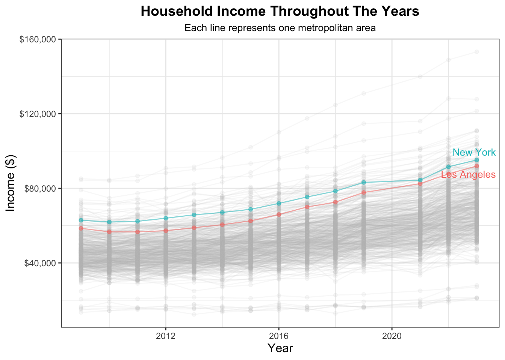
R Code
ggplot(RENT, aes(x=year, y=monthly_rent, color=NAME)) +#stat_smooth(se=FALSE, color="red4") + geom_point(alpha =0.5) +geom_line(alpha =0.5) +gghighlight(CBSA %in%c(nyc$CBSA, los_angeles$CBSA),use_direct_label =FALSE,unhighlighted_params =list(alpha =0.1, color ="grey")) +geom_text_repel(data =subset(RENT, NAME %in%c(nyc$NAME, los_angeles$NAME) & year ==max(year)),aes(label = dplyr::case_when( NAME == nyc$NAME ~"New York", NAME == los_angeles$NAME ~"Los Angeles",TRUE~ NAME ), color = NAME),nudge_x =0.1, nudge_y =0.1,direction ="y",hjust =0,segment.color =NA,size =3.5,show.legend =FALSE ) +#geom_point(alpha=0.03) +xlab("Year") +ylab("Rent ($)") +scale_y_continuous(labels = scales::dollar) +theme_bw() +theme(legend.position="none") +labs(title ="Changes in Rent Throughout The Years", subtitle ="Each line represents one metropolitan area") +theme(plot.subtitle =element_text(size =10, hjust =0.5),plot.title =element_text(size =14, face ="bold", hjust =0.5),axis.title =element_text(size =12),strip.text =element_text(size =10, face ="bold") ) +guides(size =guide_legend(title.position ="top")) +theme(legend.position ="none") +annotate("text", x =-Inf, y =Inf, label ="Each line = one CBSA", hjust =1.1, vjust =1.5, size =3.5, color ="gray30")
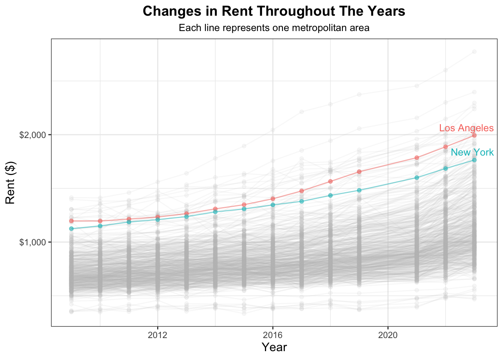
R Code
ggplot(POPULATION, aes(x=year, y=population, color=NAME)) +geom_point(alpha =0.5) +geom_line(alpha =0.5) +gghighlight(CBSA %in%c(nyc$CBSA, los_angeles$CBSA),use_direct_label =FALSE,unhighlighted_params =list(alpha =0.1, color ="grey")) +geom_text_repel(data =subset(POPULATION, NAME %in%c(nyc$NAME, los_angeles$NAME) & year ==max(year)),aes(label = dplyr::case_when( NAME == nyc$NAME ~"New York", NAME == los_angeles$NAME ~"Los Angeles",TRUE~ NAME ), color = NAME),nudge_x =0.1, nudge_y =0.1,direction ="y",hjust =0,segment.color =NA,size =3.5,show.legend =FALSE ) +xlab("Year") +ylab("Population") +scale_y_continuous(labels = scales::label_comma()) +theme_bw() +theme(legend.position="none") +labs(title ="Changes in Population Throughout The Years", subtitle ="Each line represents one metropolitan area") +theme(plot.subtitle =element_text(size =10, hjust =0.5),plot.title =element_text(size =14, face ="bold", hjust =0.5),axis.title =element_text(size =12),strip.text =element_text(size =10, face ="bold") ) +guides(size =guide_legend(title.position ="top")) +theme(legend.position ="none") +annotate("text", x =-Inf, y =Inf, label ="Each line = one CBSA", hjust =1.1, vjust =1.5, size =3.5, color ="gray30")
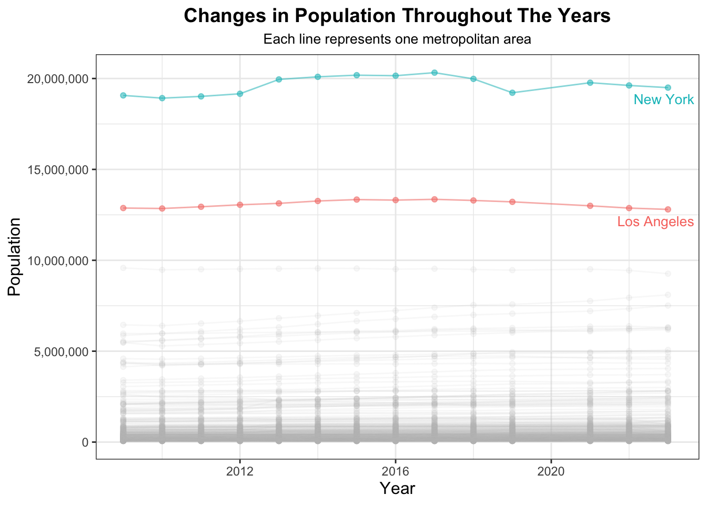
R Code
ggplot(HOUSEHOLDS, aes(x=year, y=households, color=NAME)) +geom_point(alpha =0.5) +geom_line(alpha =0.5) +gghighlight(CBSA %in%c(nyc$CBSA, los_angeles$CBSA),use_direct_label =FALSE,unhighlighted_params =list(alpha =0.1, color ="grey")) +geom_text_repel(data =subset(HOUSEHOLDS, NAME %in%c(nyc$NAME, los_angeles$NAME) & year ==max(year)),aes(label = dplyr::case_when( NAME == nyc$NAME ~"New York", NAME == los_angeles$NAME ~"Los Angeles",TRUE~ NAME ), color = NAME),nudge_x =0.1, nudge_y =0.1,direction ="y",hjust =0,segment.color =NA,size =3.5,show.legend =FALSE ) +xlab("Year") +ylab("Household") +scale_y_continuous(labels = scales::label_comma()) +theme_bw() +theme(legend.position="none") +labs(title ="Changes in Total Households Throughout The Years", subtitle ="Each line represents one metropolitan area") +theme(plot.subtitle =element_text(size =10, hjust =0.5),plot.title =element_text(size =14, face ="bold", hjust =0.5),axis.title =element_text(size =12),strip.text =element_text(size =10, face ="bold") ) +guides(size =guide_legend(title.position ="top")) +theme(legend.position ="none") +annotate("text", x =-Inf, y =Inf, label ="Each line = one CBSA", hjust =1.1, vjust =1.5, size =3.5, color ="gray30")
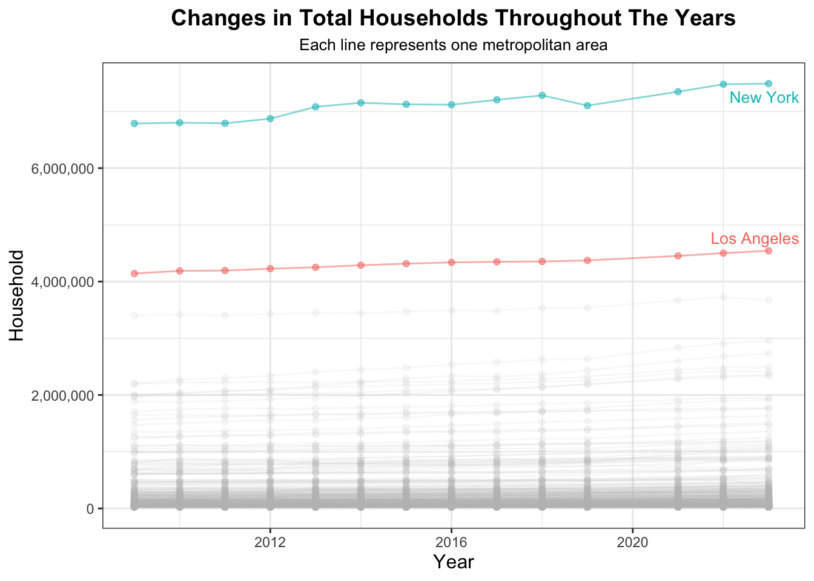
R Code
# need to add wages code
Task 2: Multi-Table Questions
Now that we have explored visualizations on of datasets, let’s explore our data by joining tables together and observing relationships and answering inquiries that will inspire our final policy analysis and help you build fluency with the tables.
Which CBSA (by name) permitted the largest number of new housing units in the decade from 2010 to 2019 (inclusive)?
R Code
# CBSA (by name) that permitted the largest number of new housing units in the decade from 2010 to 2019 (inclusive)cbsa_by_name_largest_number_housing_units <-left_join(PERMITS, INCOME, by=c("CBSA"="CBSA", "year"="year")) |>select(CBSA, NAME, new_housing_units_permitted, year) |>filter(year >=2010& year <=2019) |>group_by(NAME) |>summarize(largest_total_housing_units_permitted =sum(new_housing_units_permitted)) |>slice_max(largest_total_housing_units_permitted)cbsa_name <- cbsa_by_name_largest_number_housing_units$NAMEcbsa_name
The CBSA, by metropolitan name, that permitted the largest number of new housing units in the decade from 2010 to 2019 (inclusive) is Houston-The Woodlands-Sugar Land, TX.
In what year did Albuquerque, NM (CBSA Number 10740) permit the most new housing units?
R Code
# Year Albuquerque, NM (CBSA Number 10740) permitted the most new housing unitsyear_Albuquerque_most_units <-left_join(PERMITS, INCOME, by=c("CBSA"="CBSA", "year"="year")) |>select(CBSA, NAME, new_housing_units_permitted, year) |>filter(CBSA ==10740) |># Albuquerque, NMslice_max(order_by=new_housing_units_permitted, n=1) # instance with most new housing unitsyear_Albuquerque <- year_Albuquerque_most_units$yearyear_Albuquerque
Albuquerque, NM (CBSA Number 10740) permitted the most new housing units in 2021.
Which state (not CBSA) had the highest average individual income in 2015?
The state that had the highest average individual income in 2015 was DC.
Data scientists and business analysts are recorded under NAICS code 5182. What is the last year in which the NYC CBSA had the most data scientists in the country? In recent, the San Francisco CBSA has had the most data scientists.
The last year in which the NYC CBSA 35620 had the most data scientists in the country was 2015.
What fraction of total wages in the NYC CBSA was earned by people employed in the finance and insurance industries (NAICS code 52)? In what year did this fraction peak?
R Code
nyc_fi_industry_fractional_wages <- WAGES |>filter(FIPS == most_data_scientists_analysts_nyc$FIPS) |># change NYC for its CBSAgroup_by(year) |>mutate(finance_insurance_industry =if_else(INDUSTRY ==52, TOTAL_WAGES, 0)) |>summarize(financial_insurance_industry_fraction_wages =sum(finance_insurance_industry) /sum(TOTAL_WAGES)) |>slice_max(order_by = financial_insurance_industry_fraction_wages, n =20)nyc_fi_industry_fractional_wagesnyc_fi_industry_fractional_wages$financial_insurance_industry_fraction_wages <-round(nyc_fi_industry_fractional_wages$financial_insurance_industry_fraction_wages, 4)#nyc_finance_insurance_industry_fraction_wagesnyc_fi_industry_fractional_wages |>format_titles() |>head(n =10) |>datatable(options =list(searching =FALSE, info =FALSE))#nyc_avg_fraction_all_years <- mean(nyc_finance_insurance_industry_fraction_wages)#nyc_avg_fraction_all_yearsyear_fraction_peaked <- nyc_fi_industry_fractional_wages |>slice_max(order_by = financial_insurance_industry_fraction_wages, n =1) |>select(year)year_fraction_peaked
The fraction of total wages in the NYC CBSA earned by people employed in the finance and insurance industries (NAICS code 52) per year is found in the table above and this fraction peaked in 2014.
Task 3: Initial Visualizations
Using the functions of the ggplot2 package, let’s create suitable visualizations for each of the following relationships to continue familiarizing ourselves with our datasets.
The relationship between monthly rent and average household income per CBSA in 2009.
R Code
# The relationship between monthly rent and average household income per CBSA in 2009.monthly_rent_and_ave_hh_income <-inner_join(INCOME, RENT, by=c("CBSA"="CBSA", "NAME"="NAME", "year"="year")) |>filter(year ==2009) |>group_by(CBSA) ggplot(monthly_rent_and_ave_hh_income, aes(x = household_income, y = monthly_rent)) +geom_point(alpha =1) +geom_smooth(method ="lm", se =TRUE, alpha = .3) +xlab("Average Household Income ($)") +ylab("Monthly Rent ($)") +labs(title ="Monthly Rent vs Average Household Income in 2009", subtitle ="Each point represents one metropolitan area" ) +scale_y_continuous(labels = scales::dollar) +scale_x_continuous(labels = scales::dollar) +theme_bw() +theme(plot.subtitle =element_text(size =10, hjust =0.5),plot.title =element_text(size =14, face ="bold", hjust =0.5),axis.title =element_text(size =12),strip.text =element_text(size =10, face ="bold") ) +guides(size =guide_legend(title.position ="top")) +theme(legend.position ="none") +annotate("text", x =-Inf, y =Inf, label ="Each point = one CBSA", hjust =1.1, vjust =1.5, size =3.5, color ="gray30")
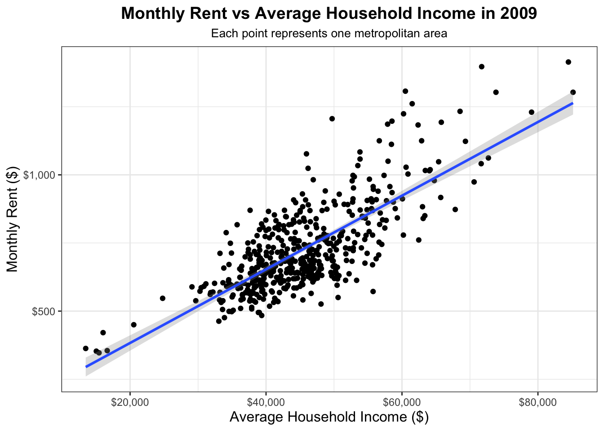
The relationship between total employment and total employment in the health care and social services sector (NAICS 62) across different CBSAs. Design your visualization so that it is possible to see the evolution of this relationship over time.
R Code
#The relationship between total employment and total employment in the health care and social services sector (NAICS 62) across different CBSAs. Design your visualization so that it is possible to see the evolution of this relationship over time.t1 <- INCOME |>mutate(std_cbsa =paste0("C", CBSA))t2 <- WAGES |>mutate(std_cbsa =paste0(FIPS, "0"))hc_ss_employment_per_cbsa <-inner_join(t1, t2, join_by(std_cbsa == std_cbsa)) |>filter(INDUSTRY ==62) |>group_by(std_cbsa) |>summarize(hc_ss_employment =sum(EMPLOYMENT))hc_ss_employment_per_cbsatotal_employment_per_cbsa <-inner_join(t1, t2, join_by(std_cbsa == std_cbsa)) |>group_by(std_cbsa) |>summarize(total_employment =sum(EMPLOYMENT))total_employment_per_cbsahc_ss_and_total_employment_per_cbsa <-inner_join(hc_ss_employment_per_cbsa, total_employment_per_cbsa, join_by(std_cbsa == std_cbsa))ggplot(hc_ss_and_total_employment_per_cbsa, aes(x = hc_ss_employment, y = total_employment)) +geom_point(alpha =1.0) +xlab("Health Care and Social Services Sector Employment") +ylab("Total Employment") +scale_y_continuous(labels = scales::label_comma()) +theme_bw() +labs(title ="Total Employment vs Health Care and Social Services Sector Employment", subtitle ="Each point represents one metropolitan area") +theme(plot.subtitle =element_text(size =10, hjust =0.5),plot.title =element_text(size =14, face ="bold", hjust =0.5),axis.title =element_text(size =12),strip.text =element_text(size =10, face ="bold") ) +guides(size =guide_legend(title.position ="top")) +theme(legend.position ="none") +annotate("text", x =-Inf, y =Inf, label ="Each point = one CBSA", hjust =1.1, vjust =1.5, size =3.5, color ="gray30")
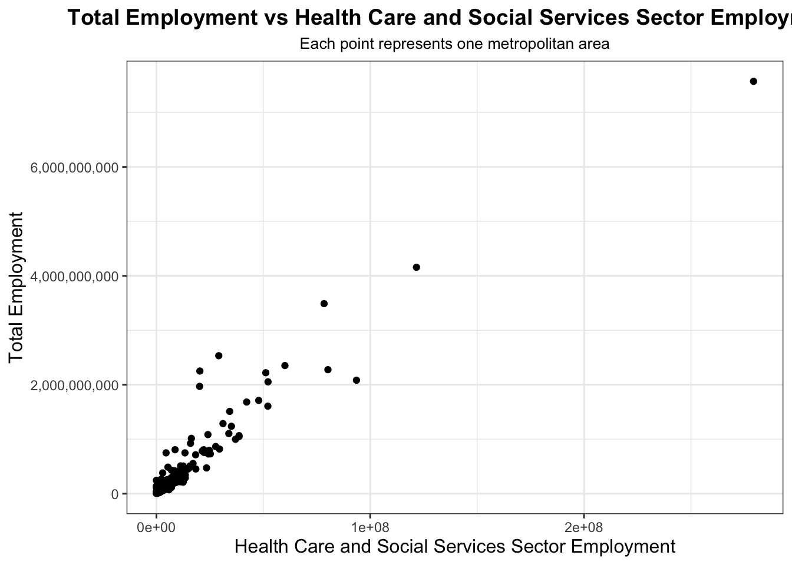
The evolution of average household size over time. Use different lines to represent different CBSAs.
R Code
ave_household_size <-inner_join(HOUSEHOLDS, POPULATION, join_by("CBSA"=="CBSA", "NAME"=="NAME", "year"=="year")) |># join tablesgroup_by(CBSA) |>mutate(ave_household = population / households) |>select(-households, -population)nyc_substring <-grepl("New York", POPULATION$NAME) # check if "New York" in NAMES stringsnyc <- POPULATION |>filter(NAME =="New York-Newark-Jersey City, NY-NJ-PA") |>distinct(CBSA, NAME)nyc#la_substring <- grepl("Los Angeles", POPULATION$NAME) # check if "Los Angeles" in NAMES stringslos_angeles <- POPULATION |>filter(NAME =="Los Angeles-Long Beach-Anaheim, CA") |>distinct(CBSA, NAME)los_angelesggplot(ave_household_size, aes(x = year, y = ave_household, color = NAME)) +geom_point(alpha = .7) +geom_path(alpha = .5) +gghighlight(CBSA %in%c(nyc$CBSA, los_angeles$CBSA),use_direct_label =FALSE,unhighlighted_params =list(alpha =0.1, color ="gray70")) +geom_text_repel(data =subset(ave_household_size, CBSA %in%c(nyc$CBSA, los_angeles$CBSA) & year ==max(year)),aes(label = dplyr::case_when( NAME == nyc$NAME ~"New York", NAME == los_angeles$NAME ~"Los Angeles",TRUE~ NAME ), color = NAME),nudge_x =0.1, nudge_y =0.1,direction ="y",hjust =0,segment.color =NA,size =3.5,show.legend =FALSE ) +xlab("Year") +ylab("Average Household Size") +theme_bw() +theme(legend.position ="none") +labs(title ="Average Household Size Over Time", subtitle ="Each point represents one metropolitan area") +theme(plot.subtitle =element_text(size =10, hjust =0.5),plot.title =element_text(size =14, face ="bold", hjust =0.5),axis.title =element_text(size =12),strip.text =element_text(size =10, face ="bold") ) +guides(size =guide_legend(title.position ="top")) +theme(legend.position ="none")
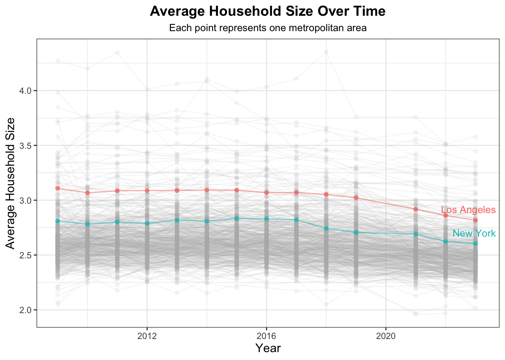
Task 4: Rent Burden
We then join together the INCOME and RENT tables to analyze rent burden or how much of income a typical resident spends on housing throughout metropolitan areas in the USA.
We first construct a suitable measure of rent burden by calculating the fraction of monthly income spent on rent as a baselin eand standardizing our data with the long term national average as the mean value. (1)
To increase interpretability, we transform our rent burden using the mean value, standard deviations, and z-scores to rescale our range of rent burden from 0-100 with the long term national average as 50.
R Code
normal_income_rent <-inner_join(INCOME, RENT, join_by("CBSA"=="CBSA", "NAME"=="NAME", "year"=="year")) |>mutate( # calculate fraction of annual income spent on rentavg_monthly_income = household_income /12,rent_fraction = (monthly_rent) / avg_monthly_income,# standardize with long term national average as mean (50)long_term_national_avg =mean(rent_fraction, na.rm =TRUE), # scale and transform: use standard deviations, z-scores and rescale from (0-100)std_dev_fraction =sd(rent_fraction, na.rm =TRUE),z_scores = (rent_fraction - long_term_national_avg) / std_dev_fraction,rent_burden_measure =pmin(pmax(50+10* z_scores, 0), 100) # max value set to 100 )
Now that we have created our metric, let’s create a couple of tables to guide our readers through the dynamics of rent burden and visualize rent burden using the DT package from Mini-Project #01:
Let’s look closer at our home, the NYC Metropolitan Area and see how rent burden has changed over time:
ggplot(nyc_rent_burden_over_time, aes(x = year, y = rent_burden_measure, color ="NYC")) +geom_point(alpha = .5) +ylim(0, 100) +geom_path(alpha = .5) +scale_color_manual(name ="Trend Line",values =c("NYC"="red") ) +xlab("Year") +ylab("Rent Burden (0-100)") +ggtitle("Rent Burden In NYC Over Time") +theme_bw() +labs(title ="Average Household Size Over Time", subtitle ="Line represents NYC metropolitan area") +theme(legend.position ="right", plot.subtitle =element_text(size =10, hjust =0.5),plot.title =element_text(size =14, face ="bold", hjust =0.5),axis.title =element_text(size =12),strip.text =element_text(size =10, face ="bold") ) +guides(size =guide_legend(title.position ="top"))
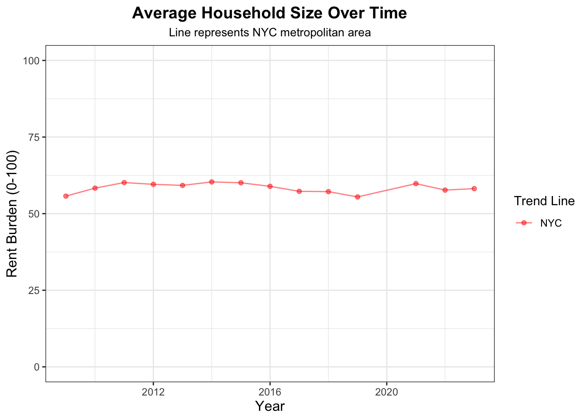
And let’s look at the Metro Areas with the highest and lowest rent burden:
R Code
# Highlight the Metro Areas highest and lowest with the highest and lowest rent burdenhighest_rent_burden_areas <- normal_income_rent |>group_by(CBSA) |>mutate(total_rent_burdens_per_CBSA =mean(rent_burden_measure)) |>distinct(CBSA, NAME, total_rent_burdens_per_CBSA) |>ungroup() |>arrange(desc(total_rent_burdens_per_CBSA)) |>slice_head(n=10)highest_rent_burden_areas |>format_titles() |>head(n =10) |>datatable(options =list(searching =FALSE, info =FALSE))
R Code
ggplot(normal_income_rent , aes(x = year, y = rent_burden_measure, color = NAME)) +geom_point(alpha = .5) +geom_path(alpha = .5) +suppressWarnings(gghighlight(CBSA %in% highest_rent_burden_areas$CBSA,use_direct_label =FALSE,unhighlighted_params =list(alpha =0.1, color ="gray70"))) +xlab("Year") +ylab("Rent Burden (0-100)") +ggtitle("Locations with Highest Rent Burden") +theme_bw() +theme(legend.position ="bottom", plot.title =element_text(size =14, face ="bold", hjust =0.5),axis.title =element_text(size =12),strip.text =element_text(size =10, face ="bold") ) +guides(size =guide_legend(title.position ="top"))
ggplot(normal_income_rent, aes(x = year, y = rent_burden_measure, color = NAME)) +geom_point(alpha = .5) +geom_path(alpha = .5) +suppressWarnings(gghighlight(CBSA %in% lowest_rent_burden_areas$CBSA,use_direct_label =FALSE,unhighlighted_params =list(alpha =0.1, color ="gray70"))) +xlab("Year") +ylab("Rent Burden (0-100)") +ggtitle("Locations with Lowest Rent Burden") +theme_bw() +theme(legend.position ="bottom", plot.title =element_text(size =14, face ="bold", hjust =0.5),axis.title =element_text(size =12),strip.text =element_text(size =10, face ="bold") ) +guides(size =guide_legend(title.position ="top"))
Task 5: Housing Growth
Next, we want to consider the ‘building-friendliness’ of various metropolitan areas, particularly, we want to identify CBSAs that permit a large number of new housing units relative to their existing population. And even more particularly, we want to identify CBSAs where the total number of housing units permitted is growing faster than the population, as these have the greatest chance of being highly affordable!
We join together the POPULATION and PERMITS tables to construct a suitable measure of housing growth: that is, how many new housing units are permitted in a CBSA, relative to both the current number of residents and the overall population growth of that CBSA.
We first calculate population growth within each CBSA over a rolling 5 year window:
An ‘instantaneous’ measure of housing growth that depends on the absolute population of a CBSA and the number of new housing units permitted that year.
And a ‘rate-based’ measure of housing growth that compares the number of housing permits to the population growth over a 5 year lookback window.
housing_growth <-inner_join(population_growth, housing_change, join_by("CBSA"=="CBSA", "year"=="year")) |>mutate(# inst. measure of housing growth, absolute pop. of CBSA and num of new home units# Raw housing supply relative to pop.new_housing_relative_to_pop = new_housing_units_permitted / population, # change in housing / change in populationrate_based_growth = housing_change_5yrs / pop_growth_5yrs ) |>filter(year >2013, !is.na(new_housing_relative_to_pop), !is.na(rate_based_growth), !is.infinite(rate_based_growth)) |># standardization: use z-scores and rescale to range (0-100)mutate(z_score_new_housing_relative_to_pop = (new_housing_relative_to_pop -mean(new_housing_relative_to_pop, na.rm =TRUE)) /sd(new_housing_relative_to_pop, na.rm =TRUE),instantaneous_housing_growth =pmin(pmax(50+10* z_score_new_housing_relative_to_pop, 0), 100),z_score_rate_based_housing = (rate_based_growth -mean(rate_based_growth, na.rm =TRUE)) /sd(rate_based_growth, na.rm =TRUE),rate_based_housing_growth =pmin(pmax(50+10* z_score_rate_based_housing, 0), 100) )
Once we have developed the two individual metrics, we construct two tables identifying the CBSAs that score particularly high or low on each metric:
R Code
top_inst_housing_growth <- housing_growth |>filter(year ==2023) |>arrange(desc(instantaneous_housing_growth)) |>slice_head(n=5)bottom_inst_housing_growth <- housing_growth |>filter(year ==2023) |>arrange(instantaneous_housing_growth) |>slice_head(n=5)# Combine side by sidelowest_and_highest_inst_housing_growth <-tibble("Top Metro Area"= top_inst_housing_growth$NAME,"Top Instantaneous Growth"= top_inst_housing_growth$instantaneous_housing_growth,"Bottom Metro Area"= bottom_inst_housing_growth$NAME,"Bottom Instantaneous Growth"= bottom_inst_housing_growth$instantaneous_housing_growth)# Pretty displaylowest_and_highest_inst_housing_growth|>gt()
Top Metro Area
Top Instantaneous Growth
Bottom Metro Area
Bottom Instantaneous Growth
Myrtle Beach-Conway-North Myrtle Beach, SC-NC
100.00000
Wheeling, WV-OH
37.99838
Salisbury, MD-DE
100.00000
Danville, IL
38.08536
Punta Gorda, FL
99.08106
Morgantown, WV
38.10882
Crestview-Fort Walton Beach-Destin, FL
90.15609
Weirton-Steubenville, WV-OH
38.16689
North Port-Sarasota-Bradenton, FL
87.70969
Decatur, IL
38.73129
R Code
locations_top_rate_housing_growth <- housing_growth |>arrange(desc(rate_based_housing_growth)) |>slice_head(n=5)locations_bottom_rate_housing_growth <- housing_growth |>arrange(rate_based_housing_growth) |>slice_head(n=5)# Combine side by sidelowest_and_highest_rate_housing_growth <-tibble("Top Metro Area"= locations_top_rate_housing_growth$NAME,"Top Rate Based Growth"= locations_top_rate_housing_growth$rate_based_housing_growth,"Bottom Metro Area"= locations_bottom_rate_housing_growth$NAME,"Bottom Rate Based Growth"= locations_bottom_rate_housing_growth$rate_based_housing_growth)# Pretty displaylowest_and_highest_rate_housing_growth |>gt()
Top Metro Area
Top Rate Based Growth
Bottom Metro Area
Bottom Rate Based Growth
Buffalo-Cheektowaga-Niagara Falls, NY
100
Racine, WI
0
Chicago-Naperville-Elgin, IL-IN-WI
100
Florence, SC
0
Sheboygan, WI
100
Parkersburg-Vienna, WV
0
Florence-Muscle Shoals, AL
100
Roanoke, VA
0
Lewiston-Auburn, ME
100
Sierra Vista-Douglas, AZ
0
Finally, we develop a composite score that combines these two metrics as a weighted sum with 80% of weight applied to our rate based growth since it takes time for any change to be accounted for.
Lastly, we identify CBSAs that do particularly well and particularly poorly on our metric.
R Code
# composite scores for instantaneous_housing_growth and rate_based_housing_growthcomposite_scores <- housing_growth |># weighted average for composite scoremutate(composite_score =0.2*instantaneous_housing_growth +0.8*rate_based_housing_growth) |>select(CBSA, NAME, year, composite_score)top_composite_scores <- composite_scores |>arrange(desc(composite_score)) |>slice_head(n=5)bottom_composite_scores <- composite_scores |>arrange(composite_score) |>slice_head(n=5)# Combine side by sidelowest_and_highest_composite_score <-tibble("Top Metro Area"= top_composite_scores$NAME,"Top Composite Housing Growth"= top_composite_scores$composite_score,"Bottom Metro Area"= bottom_composite_scores$NAME,"Bottom Composite Housing Growth"= bottom_composite_scores$composite_score)# Pretty displaylowest_and_highest_composite_score |>gt()
Lastly, we create several visualizations to investigate the relationships between Rent Burden and Housing Growth metrics. Using these plots, we will be able identify the most “YIMBY” CBSAs as ones which:
had relatively high rent burden in the early part of the study period
R Code
# had relatively high rent burden in the early part of the study period;highest_rent_burden_areas_early_in_study <- normal_income_rent |>filter(year <=2014) |>group_by(CBSA, NAME) |>mutate(avg_initial_rent_burden =mean(rent_burden_measure, na.rm =TRUE)) |>arrange(desc(avg_initial_rent_burden)) |>filter(avg_initial_rent_burden >50) |>distinct(CBSA, NAME, avg_initial_rent_burden)# visualize the first year for rent burden measureshighest_rent_burden_areas_early_in_study_year_one <- normal_income_rent |>filter(year ==2019) |>group_by(CBSA, NAME) |>arrange(desc(rent_burden_measure)) |>filter(rent_burden_measure >60) |>distinct(CBSA, NAME, rent_burden_measure)first_points <- normal_income_rent |>filter(CBSA %in% highest_rent_burden_areas_early_in_study_year_one$CBSA, year ==2009) |>as.data.frame()ggplot(normal_income_rent , aes(x = year, y = rent_burden_measure, color = NAME)) +geom_point(alpha = .3) +geom_path(alpha = .3) +suppressWarnings(gghighlight(CBSA %in% highest_rent_burden_areas_early_in_study$CBSA,use_direct_label =FALSE,unhighlighted_params =list(alpha =0.1, color ="gray70"))) +geom_point(data = first_points,aes(y = rent_burden_measure, x = year),color ="black",fill ="red",shape =21,size =3.0,stroke =0.8,inherit.aes =FALSE ) +xlab("Year") +ylab("Rent Burden (0-100)") +ggtitle("Cities with Highest Rent Burden in First Year") +theme_bw() +theme(legend.position ="none",plot.title =element_text(size =14, face ="bold", hjust =0.5),axis.title =element_text(size =12),strip.text =element_text(size =10, face ="bold") ) +guides(size =guide_legend(title.position ="top"))
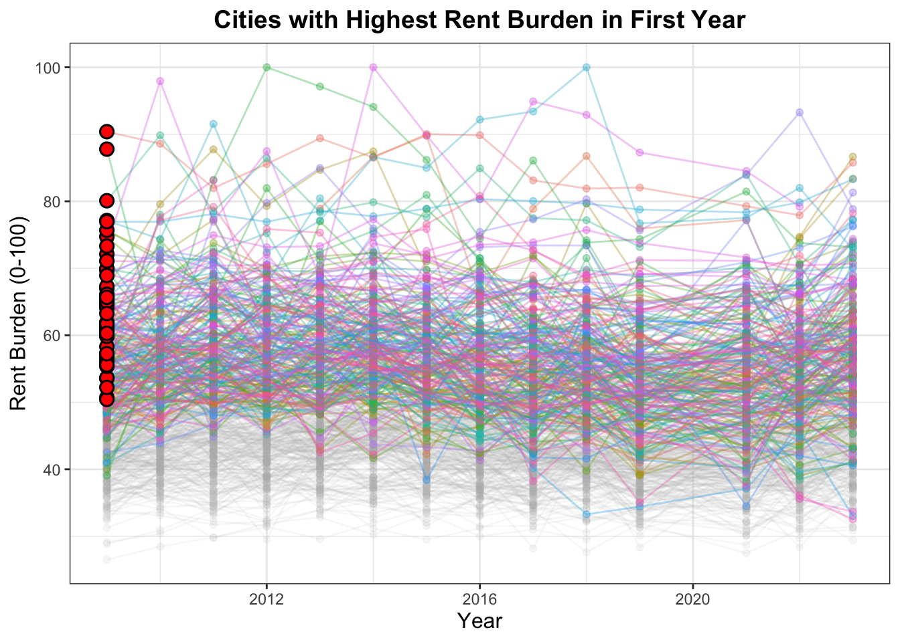
have had a decrease in rent burden over the study period
R Code
# have had a decrease in rent burden over the study period;change_in_rent_burden_in_later_years <- normal_income_rent |>group_by(CBSA, NAME) |>arrange(year) |>mutate(rent_change = (rent_burden_measure -lag(rent_burden_measure, n=5)) /lag(rent_burden_measure, n=5)) |>ungroup() |>filter(year %in%c(2014,2023)) |>select(CBSA, NAME, year, rent_change) |>pivot_wider(names_from = year, values_from = rent_change, names_prefix ="rent_decrease_") |>filter(!is.na(rent_decrease_2014), !is.na(rent_decrease_2023)) |>select(CBSA, NAME, rent_decrease_2023)change_in_rent_burden_in_later_yearshighest_initial_rent_but_decrease_in_sub_years <- normal_income_rent |>inner_join(change_in_rent_burden_in_later_years, join_by("CBSA"=="CBSA", "NAME"=="NAME")) |>filter(CBSA %in% highest_rent_burden_areas_early_in_study$CBSA) |>filter(year ==2023, rent_decrease_2023 <0) |>select(-long_term_national_avg, -std_dev_fraction, -z_scores, -household_income, -year)highest_initial_rent_but_decrease_in_subsequent_years <- highest_initial_rent_but_decrease_in_sub_years |>inner_join(highest_rent_burden_areas_early_in_study, join_by("CBSA"=="CBSA", "NAME"=="NAME"))highest_initial_rent_but_decrease_in_subsequent_yearssuppressWarnings({ggplot(normal_income_rent, aes(x = year, y = rent_burden_measure, color = NAME)) +geom_point(alpha = .7) +geom_path(alpha = .3) +suppressWarnings(gghighlight(CBSA %in% highest_initial_rent_but_decrease_in_subsequent_years$CBSA,use_direct_label =FALSE,unhighlighted_params =list(alpha =0.1, color ="gray70"))) +xlab("Year") +ylab("Rent Burden (0-100)") +ggtitle("Cities With Decreasing Rent Burden Over Time") +theme_bw() +theme(legend.position ="none",plot.title =element_text(size =14, face ="bold", hjust =0.5),axis.title =element_text(size =12),strip.text =element_text(size =10, face ="bold") ) +guides(size =guide_legend(title.position ="top")) })
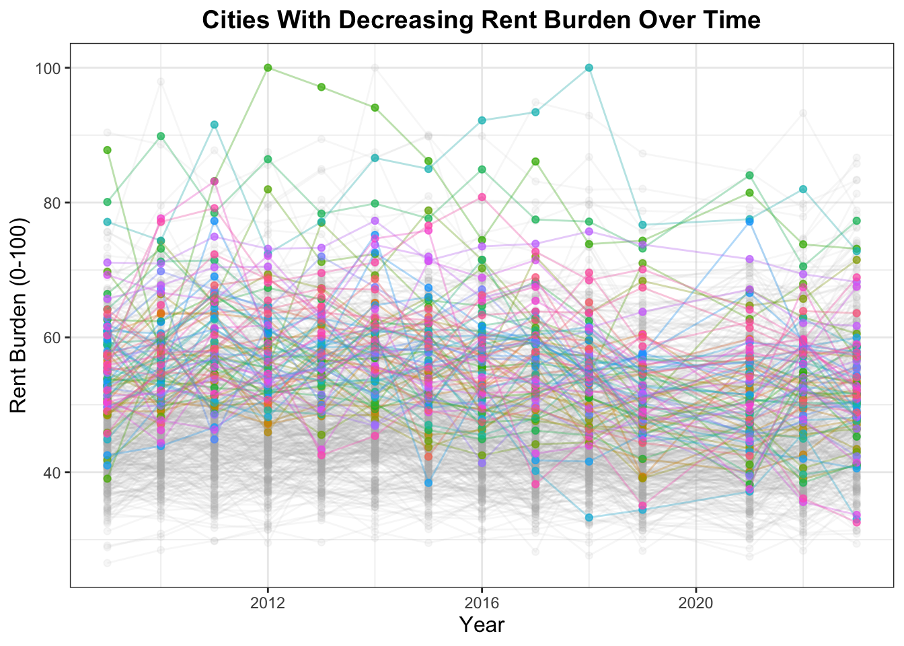
have had population growth over the study period
R Code
# have had population growth over the study periodpopulation_growth_over_study_period <- population_growth |>filter(year >=2018) |>group_by(CBSA, NAME) |>mutate(ave_pop_growth =mean(pop_growth_5yrs, na.rm=TRUE))|>filter(ave_pop_growth >0)|>ungroup() |>filter(year ==2023)population_growth_over_study_periodggplot(population_growth, aes(x = year, y = pop_growth_5yrs, color = NAME)) +geom_point(alpha = .7) +geom_path(alpha = .3) +suppressWarnings(gghighlight(CBSA %in% population_growth_over_study_period$CBSA,use_direct_label =FALSE,unhighlighted_params =list(alpha =0.1, color ="gray70"))) +xlab("Year") +ylab("Population") +ggtitle("Cities With Increasing Population Growth Over Time") +theme_bw()+theme(legend.position ="none",plot.title =element_text(size =14, face ="bold", hjust =0.5),axis.title =element_text(size =12),strip.text =element_text(size =10, face ="bold") ) +guides(size =guide_legend(title.position ="top"))
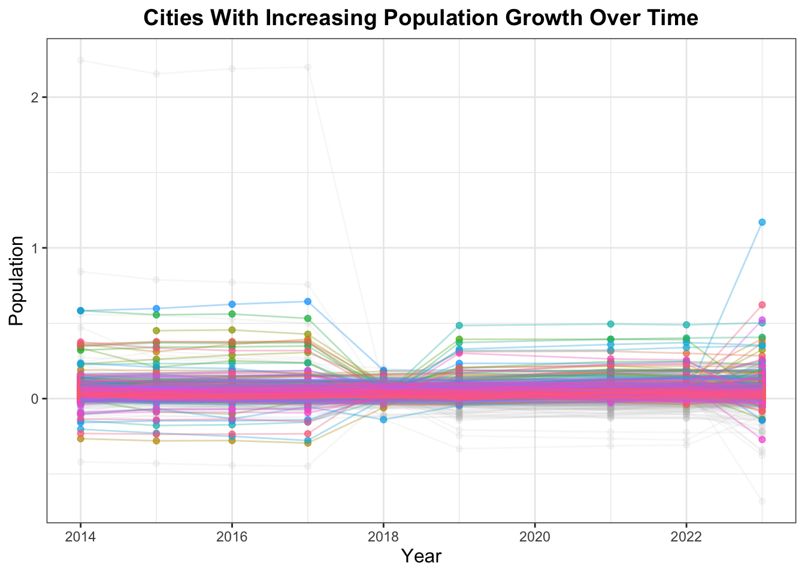
and have had above-average housing growth during the study period
R Code
# have had above-average housing growth during the study period.above_average_housing_growth <- composite_scores |>pivot_wider(names_from = year, values_from = composite_score, names_prefix ="housing_growth_") |>filter(!is.na(housing_growth_2014), !is.na(housing_growth_2023), housing_growth_2023 >50) |>select(CBSA, NAME, housing_growth_2023)above_average_housing_growthggplot(composite_scores, aes(x = year, y = composite_score, color = NAME)) +geom_point(alpha = .7) +geom_path(alpha = .3) +suppressWarnings(gghighlight(CBSA %in% above_average_housing_growth$CBSA,use_direct_label =FALSE,unhighlighted_params =list(alpha =0.1, color ="gray70"))) +xlab("Year") +ylab("Composite Score") +ggtitle("Cities With Above Average Housing Growth") +theme_bw() +theme(legend.position ="none",plot.title =element_text(size =14, face ="bold", hjust =0.5),axis.title =element_text(size =12),strip.text =element_text(size =10, face ="bold") ) +guides(size =guide_legend(title.position ="top"))
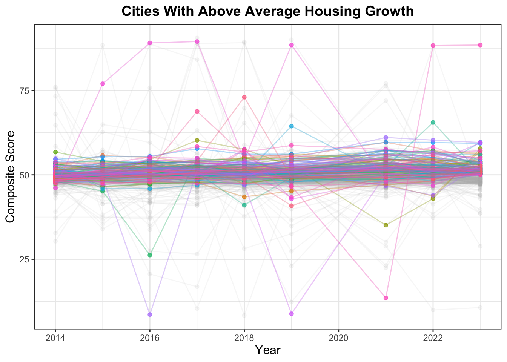
Thus, joining these various qualities will allow us locate examples of YIMBY success!
R Code
# A CBSA exhibiting all of these qualities is (arguably) an example of YIMBY success and is not a city in decline, as would be indicated by falling population resulting in lower rents.pop_growth_and_above_avg_housing_growth <-inner_join(population_growth_over_study_period, above_average_housing_growth, join_by("CBSA"=="CBSA", "NAME"=="NAME"))YIMBY <-inner_join(highest_initial_rent_but_decrease_in_subsequent_years, pop_growth_and_above_avg_housing_growth, join_by("CBSA"=="CBSA", "NAME"=="NAME"))YIMBY |>mutate(monthly_rent =round(monthly_rent, 3), avg_monthly_income =round(avg_monthly_income, 3), rent_fraction =round(rent_fraction, 3), rent_burden_measure =round(rent_burden_measure, 3), rent_decrease_2023 =round(rent_decrease_2023, 3),avg_initial_rent_burden =round(avg_initial_rent_burden, 3),pop_growth_5yrs =round(pop_growth_5yrs, 3),ave_pop_growth =round(ave_pop_growth, 3),housing_growth_2023 =round(housing_growth_2023, 3)) |>format_titles() |>head(n =10) |>datatable(options =list(searching =FALSE, info =FALSE))
R Code
ggplot(composite_scores, aes(x = year, y = composite_score, color = NAME)) +geom_point(alpha = .7) +geom_path(alpha = .3) +suppressWarnings(gghighlight(CBSA %in% YIMBY$CBSA,use_direct_label =FALSE,unhighlighted_params =list(alpha =0.1, color ="gray70"))) +xlab("Year") +#facet_wrap(~ NAME, scales = "fixed") +ylim(0, 100) +xlab("Year") +ylab("Above Average Housing Growth") +ggtitle("(YIMBYs: Cities with Above Average Housing Growth Over The Years") +theme_bw() +theme(legend.position ="bottom",plot.title =element_text(size =14, face ="bold", hjust =0.5),axis.title =element_text(size =12),strip.text =element_text(size =10, face ="bold"),axis.text.x =element_text(angle =20, hjust =1))
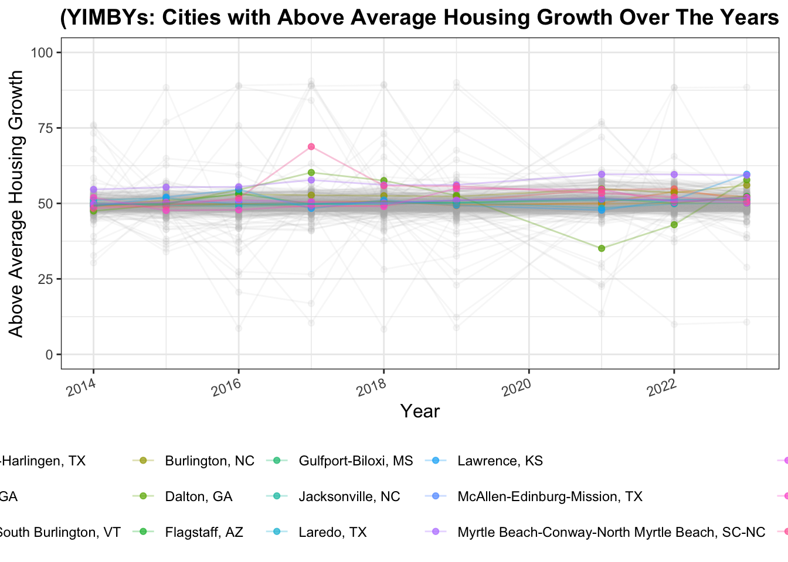
R Code
ggplot(normal_income_rent, aes(x = year, y = rent_burden_measure, color = NAME)) +geom_path(alpha = .3) +geom_point(alpha = .7) +suppressWarnings(gghighlight(CBSA %in% YIMBY$CBSA,use_direct_label =FALSE,unhighlighted_params =list(alpha =0.1, color ="gray70"))) +ylim(0, 100) +xlab("Year") +ylab("Lower Rent Burden") +ggtitle("(YIMBYs: Cities with Lower Rent Burden Over The Years") +theme_bw() +theme(legend.position ="none",plot.title =element_text(size =14, face ="bold", hjust =0.5),axis.title =element_text(size =12),strip.text =element_text(size =10, face ="bold"),axis.text.x =element_text(angle =20, hjust =1))
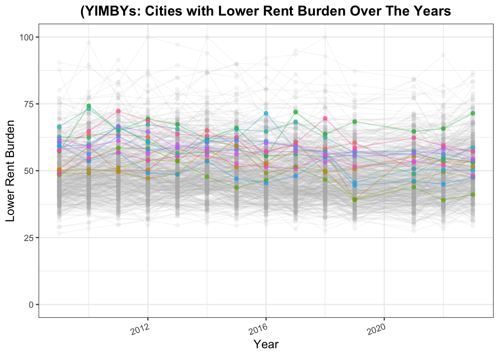
R Code
housing_growth_scores <-inner_join(composite_scores, population_growth_over_study_period, join_by("CBSA"=="CBSA", "NAME"=="NAME", "year"=="year")) |>select(CBSA, NAME, composite_score, ave_pop_growth)housing_growth_scorestotal <-inner_join(change_in_rent_burden_in_later_years, housing_growth_scores, join_by("CBSA"=="CBSA", "NAME"=="NAME"))total <- total |>mutate(norm_pop_growth = scales::rescale( ave_pop_growth,to =c(0, 6), # min/max point size for ggplotfrom =c(0.000243, 0.313) # actual min/max of your data ))ggplot(total, aes(x = rent_decrease_2023,y = composite_score,size = norm_pop_growth,color = CBSA %in% YIMBY$CBSA)) +# highlight YIMBY quadrant (low rent, high growth)annotate("rect",xmin =-0.4, xmax =0,ymin =50, ymax =62,alpha =0.08, fill ="green3") +geom_point(alpha =0.8) +scale_size_continuous(range =c(0, 6)) +scale_color_manual(values =c("TRUE"="green3", "FALSE"="steelblue")) +ylim(40, 62) +xlim(-0.4, 0.4) +labs(x ="Rent Change % [Decr:(-), Incr:(+)]",y ="Housing Growth Composite Score (0–100)",title ="Trajectory Over Time: Rent Burden vs. Housing Growth",size ="Normalized Population Growth",color ="Highlighted (YIMBY)" ) +gghighlight( CBSA %in% YIMBY$CBSA,label_key = NAME,use_direct_label =TRUE,unhighlighted_params =list(alpha =0.2, color ="gray60"),label_params =list(size =3.5) ) +theme_bw() +theme(plot.title =element_text(size =14, face ="bold", hjust =0.5),axis.title =element_text(size =12),strip.text =element_text(size =10, face ="bold") ) +guides(size =guide_legend(title.position ="top")) +theme(legend.position ="bottom",legend.title =element_text(size =8), # small title fontlegend.text =element_text(size =6), # small label fontlegend.key.size =unit(0.3, "cm"), # smaller keyslegend.box ="horizontal"# layout side by side )
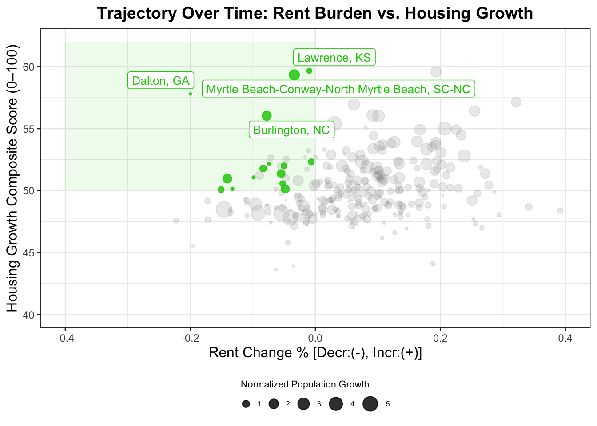
Similarly, locating low housing growth and high rent burden qualities will allow us locate examples of NIMBY stagnation:
R Code
# have had a decrease in rent burden over the study period;increase_in_rent_burden_in_sub_years <- normal_income_rent |>inner_join(change_in_rent_burden_in_later_years, join_by("CBSA"=="CBSA", "NAME"=="NAME")) |>filter(CBSA %in% highest_rent_burden_areas_early_in_study$CBSA) |>filter(year ==2023, rent_decrease_2023 >0) |>select(-long_term_national_avg, -std_dev_fraction, -z_scores, -household_income, -year)# have had below average housing growth during the study period.below_average_housing_growth <- composite_scores |>pivot_wider(names_from = year, values_from = composite_score, names_prefix ="housing_growth_") |>filter(!is.na(housing_growth_2014), !is.na(housing_growth_2023), housing_growth_2023 <50) |>select(CBSA, NAME, housing_growth_2023)highest_initial_rent_and_increase_in_subsequent_years <- increase_in_rent_burden_in_sub_years |>inner_join(highest_rent_burden_areas_early_in_study, join_by("CBSA"=="CBSA", "NAME"=="NAME"))pop_growth_but_below_avg_housing_growth <-inner_join(population_growth_over_study_period, below_average_housing_growth, join_by("CBSA"=="CBSA", "NAME"=="NAME"))NIMBY <-inner_join(highest_initial_rent_and_increase_in_subsequent_years, pop_growth_but_below_avg_housing_growth, join_by("CBSA"=="CBSA", "NAME"=="NAME"))ggplot(total, aes(x = rent_decrease_2023,y = composite_score,size = norm_pop_growth,color = CBSA %in% NIMBY$CBSA)) +# highlight YIMBY quadrant (low rent, high growth)annotate("rect",xmin =0, xmax = .4,ymin =40, ymax =50,alpha =0.08, fill ="red") +geom_point(alpha =0.8) +scale_size_continuous(range =c(0, 6)) +scale_color_manual(values =c("TRUE"="red3", "FALSE"="steelblue")) +ylim(40, 62) +xlim(-0.4, 0.4) +labs(x ="Rent Change % [Decr:(-), Incr:(+)]",y ="Housing Growth Composite Score (0–100)",title ="Trajectory Over Time: Rent Burden vs. Housing Growth",size ="Normalized Population Growth",color ="Highlighted (NIMBY)" ) +gghighlight( CBSA %in% NIMBY$CBSA,label_key = NAME,use_direct_label =TRUE,unhighlighted_params =list(alpha =0.2, color ="gray60"),label_params =list(size =3.5) ) +theme_bw() +theme(plot.title =element_text(size =14, face ="bold", hjust =0.5),axis.title =element_text(size =12),strip.text =element_text(size =10, face ="bold") ) +guides(size =guide_legend(title.position ="top")) +theme(legend.position ="bottom",legend.title =element_text(size =8), # small title fontlegend.text =element_text(size =6), # small label fontlegend.key.size =unit(0.3, "cm"), # smaller keyslegend.box ="horizontal"# layout side by side )
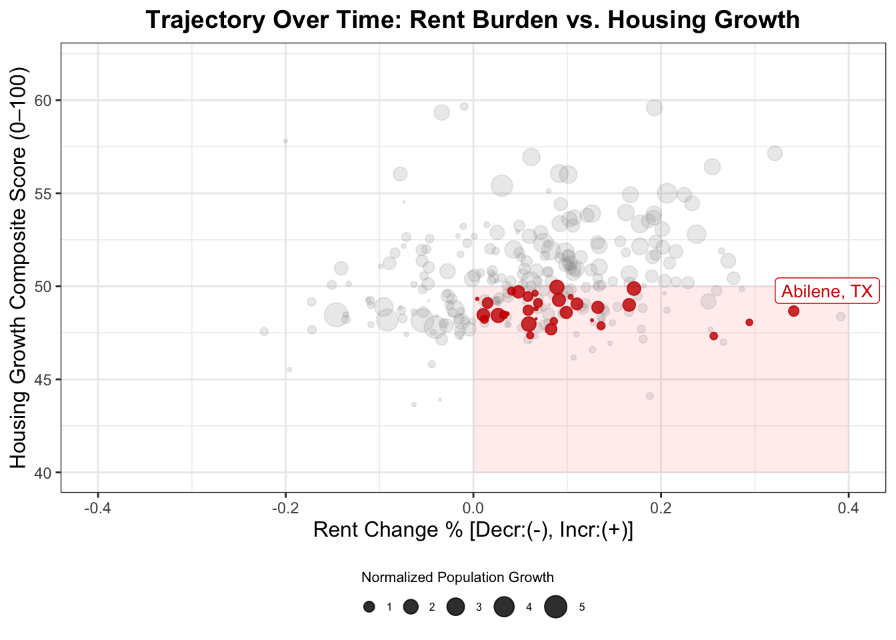
We can observe characteristics of our YIMBY cities more closely:
R Code
# Build summary comparison table from YIMBY and NIMBY data framespolicy_table <-bind_rows( YIMBY |>transmute(Type ="YIMBY",City = NAME,`Rent Burden (%)`=sprintf("%.1f ↓", rent_burden_measure),`Housing Growth (Index)`=sprintf("%.1f ↑", housing_growth_2023),`Pop. Growth (5 yrs)`=sprintf("+%.1f%%", ave_pop_growth *100),`Rent Change (2023)`=sprintf("%.2f%%", rent_decrease_2023 *100) ), NIMBY |>transmute(Type ="NIMBY",City = NAME,`Rent Burden (%)`=sprintf("%.1f ↑", rent_burden_measure),`Housing Growth (Index)`=sprintf("%.1f ↓", housing_growth_2023),`Pop. Growth (5 yrs)`=sprintf("+%.1f%%", ave_pop_growth *100),`Rent Change (2023)`=sprintf("+%.2f%%", rent_decrease_2023 *100) ))# Render nicely as an interactive datatabledatatable( policy_table,caption ="YIMBY Cities",options =list(pageLength =10,dom ='t', # show only the table, no filter/search/paginationordering =FALSE,scrollX =TRUE ),rownames =FALSE,class ="cell-border stripe hover compact")
Policy Brief
As part of the national YIMBY pack, we propose a federal incentive program to encourage local municipalities to adopt more-(YIMBY) set of housing policies that promote growth, affordability, and labor stability for our citizens.
To secure bipartisan support, we recommend identifying two congressional sponsors:
- A primary sponsor from a city with clear YIMBY success (rapid housing growth and falling rent burden).
- A co-sponsor from a city showing NIMBY stagnation (low housing growth and high rent burden).
Our analysis compares the hometowns of our congressional sponsors:
The ideal YIMBY city, Myrtle Beach, SC shows robust housing expansion and a decline in rent burden, while the NIMBY city of Abilene TX experiences tight supply and accelerating rents.
Type
City
Rent Burden (%)
Housing Growth (Index)
Pop. Growth (5 yrs)
Rent Change (2023)
YIMBY
Myrtle Beach, SC
57.4 ↓
59.3 ↑
+12.1%
−3.37%
NIMBY
Abilene, TX
63.5 ↑
48.7 ↓
+4.8%
+34.1%
Recommended Bill Sponsors
Primary Sponsor: Representative from Myrtle Beach, SC — representing a success story in balanced population and housing growth.
Co-Sponsor: Representative from Abilene, TX — where limited housing growth and surging rent burdens highlight the need for federal incentives.
Together, they illustrate how local policy differences shape affordability and economic opportunity.
Coalition Support: Target Occupations
We recommend seeking endorsements from unions and professional groups in sectors directly impacted by housing affordability:
Rent pressure limits hiring in hospitality and support industries.
Admin. & Support Services
3,878
59,633
High housing costs increase turnover and reduce disposable income.
These sectors are politically powerful and represent large voting blocs in both regions. They also stand to gain directly from housing affordability reforms, either through lower living costs or greater consumer spending.
Metric Overview (Non-Technical)
Rent Burden Measure:
Represents the percentage of household income spent on rent. Lower values indicate improved affordability and financial security.
Housing Growth Index:
Captures the relative pace of new housing construction or availability over time. Higher values reflect active development and better supply–demand balance.
Population Growth:
Indicates demographic vitality and local economic opportunity. Positive growth paired with stable rents suggests successful housing policy.
Policy Argument
Federal YIMBY incentives work.
When housing supply grows faster than rent burdens, working families benefit, local economies stabilize, and employers face fewer workforce shortages.
The proposed legislation would reward municipalities that demonstrate:
1. Increasing housing supply,
2. Decreasing rent burdens, and
3. Sustained population growth.
Funding could take the form of infrastructure grants, low-interest construction loans, or zoning reform assistance, ensuring that cities like Abilene can replicate Myrtle Beach’s success story.
Final Insights
Overall, this has been a marvelous data science project exploring housing affordability and abrogating for more YIMBY-friendly housing policies.